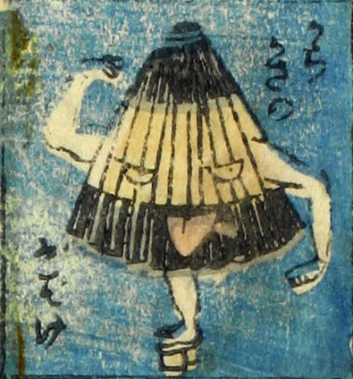

唐傘；カラカサ

唐傘のお化け。目と口のついた傘が舌を出している。腕が2本ついており、下駄を履いた1本の脚で立っている。
著作者：芳盛／出典：親書誌：U426_nichibunken_0073：しん板化物尽し；シンパンバケモノヅクシ／日付：2006／資源識別子：U426_nichibunken_0073_0018_0000
Copyright (c)2010- International Research Center for Japanese Studies, Kyoto, Japan. All rights reserved.